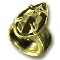
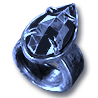
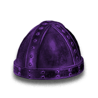

From Diablo II: Resurrected and Reign of the Warlock, unchanged by LotH.


How the bosses scale
The dotted gold line marks vanilla Uber life in Hell.
Every boss and its life (125)
- AndarielLevel 75 · 60,031 life
- MephistoLevel 87 · 94,320 life
- DurielLevel 88 · 84,524 life
- DiabloLevel 94 · 113,812 life
- Ithmar the WaykeeperLevel 95 · 29,345 life
- GnashrikLevel 95 · 253,907 life
- Haelric the JailerLevel 95 · 253,907 life
- Mordrick the BlightwardenLevel 95 · 253,907 life
- Qadir the EntombedLevel 95 · 253,907 life
- Echo of MephistoLevel 97 · 547,791 life
- Kezzhar SaltfangLevel 98 · 324,954 life
- Queen AraneaeLevel 98 · 324,954 life
- Sadiq the PoisonerLevel 98 · 324,954 life
- Wulfric the CocoonedLevel 98 · 324,954 life
- BaalLevel 99 · 493,701 life
- Elspeth the UnburiedLevel 100 · 547,791 life
- Mortlake the Grave-KeeperLevel 100 · 547,791 life
- Vhassun the UnshrivenLevel 100 · 547,791 life
- Wenna RotbowLevel 100 · 547,791 life
- Echo of AndarielLevel 100 · 660,076 life
- Echo of the ButcherLevel 101 · 585,294 life
- Qasirah the SunflayerLevel 101 · 585,294 life
- Rahkesh the Pale ClawLevel 101 · 585,294 life
- Barrow SentinelLevel 102 · 202,592 life
- Tomb SentinelLevel 102 · 202,592 life
- Aldous Vane the Salt-JailerLevel 102 · 622,580 life
- King FahirLevel 102 · 622,580 life
- Kwazu the Doll-MakerLevel 102 · 622,580 life
- Ngozu the BoundLevel 102 · 622,580 life
- Forge SentinelLevel 103 · 205,582 life
- Tomb SentinelLevel 103 · 205,582 life
- Ixtzal the Plague-DrumLevel 103 · 660,076 life
- Oyuun the Ash-MotherLevel 103 · 660,076 life
- The CuratorLevel 103 · 660,076 life
- Toghrul SaltbinderLevel 103 · 660,076 life
- Echo of DurielLevel 103 · 772,222 life
- Barrow SentinelLevel 104 · 208,572 life
- Tomb SentinelLevel 104 · 208,572 life
- Inquisitor Eldric VosseLevel 104 · 697,432 life
- Ssithraxa the Brood-MotherLevel 104 · 697,432 life
- Vizier Kharos DhalLevel 104 · 697,432 life
- Barrow SentinelLevel 105 · 211,562 life
- Forge SentinelLevel 105 · 211,562 life
- Brannoch BarkboundLevel 105 · 734,771 life
- Grenhorn the Moon-HowlerLevel 105 · 734,771 life
- Kyrene the OathbreakerLevel 105 · 734,771 life
- The Warder of DaedessaLevel 105 · 734,771 life
- Barrow SentinelLevel 106 · 214,552 life
- Tomb SentinelLevel 106 · 214,552 life
- Ancient Imhar the SleeplessLevel 106 · 772,222 life
- Gharruk BloodhornLevel 106 · 772,222 life
- Kharazad the Thrice-SlainLevel 106 · 772,222 life
- Sahra the Night-VeiledLevel 106 · 772,222 life
- Echo of DiabloLevel 106 · 884,459 life
- Barrow SentinelLevel 107 · 217,542 life
- Rime SentinelLevel 107 · 217,542 life
- Tomb SentinelLevel 107 · 217,542 life
- Grimskar HearthbaneLevel 107 · 809,590 life
- Hrimgar the Rime-MawLevel 107 · 809,590 life
- Keeper SharazLevel 107 · 809,590 life
- Voivode Stanimir the UnthawedLevel 107 · 809,590 life
- Barrow SentinelLevel 108 · 220,532 life
- Rime SentinelLevel 108 · 220,532 life
- Tomb SentinelLevel 108 · 220,532 life
- Ashkarn, Ram-Lord of DestructionLevel 108 · 847,012 life
- Durgash, Sapper of DestructionLevel 108 · 847,012 life
- Osgar the Barrow-KingLevel 108 · 847,012 life
- Varkhos the SiegemasterLevel 108 · 847,012 life
- Zhulmeq the UndermawLevel 108 · 847,012 life
- Rime SentinelLevel 109 · 223,522 life
- Tomb SentinelLevel 109 · 223,522 life
- Bertalan the Bog-FedLevel 109 · 884,459 life
- Exarch Szoreth the UnboundLevel 109 · 884,459 life
- Mother Ilka of the Black ReedsLevel 109 · 884,459 life
- Zhivena the Ice-WidowLevel 109 · 884,459 life
- Echo of BaalLevel 109 · 996,675 life
- Rime SentinelLevel 110 · 226,512 life
- Tomb SentinelLevel 110 · 226,512 life
- LilithLevel 110 · 660,000 life
- Uber BaalLevel 110 · 660,000 life
- Uber DiabloLevel 110 · 660,000 life
- Uber DurielLevel 110 · 660,000 life
- Uber IzualLevel 110 · 660,000 life
- Uber MephistoLevel 110 · 660,000 life
- Shade of Barrow SentinelLevel 110 · 750,000 life
- Shade of Tomb SentinelLevel 110 · 850,000 life
- Ailill the Last HeirLevel 110 · 921,903 life
- Echo of Juris KhanLevel 110 · 921,903 life
- Ragnhild the Ash-BrideLevel 110 · 921,903 life
- The Ice-Drowned MysticLevel 110 · 921,903 life
- Ulfrik CinderhandLevel 110 · 921,903 life
- Vulgrath, Torch of DestructionLevel 110 · 921,903 life
- Shade of Rime SentinelLevel 110 · 950,000 life
- Avatar of AzmodanLevel 110 · 1,000,000 life
- Sevra the BoneboundLevel 110 · 1,000,000 life
- Shade of BartucLevel 110 · 1,000,000 life
- Shade of Zoltun KulleLevel 110 · 1,000,000 life
- Shade of Forge SentinelLevel 110 · 1,100,000 life
- The Last VigilLevel 110 · 2,000,000 life
- Echo of the Veiled ProphetLevel 110 · 2,500,000 life
- Shade of DiabloLevel 110 · 3,000,000 life
- Echo of InariusLevel 111 · 160,827 life
- Forge SentinelLevel 111 · 229,502 life
- Rime SentinelLevel 111 · 229,502 life
- Echo of Bartuc, Warlord of BloodLevel 111 · 959,318 life
- Haddar the Blood-SwornLevel 111 · 959,318 life
- Prelate Ossan the ChainedLevel 111 · 959,318 life
- Skarvath, Thrall of the WarlordLevel 111 · 959,318 life
- Vhastrol, Jailer of HatredLevel 111 · 959,318 life
- Barrow SentinelLevel 112 · 232,492 life
- Rime SentinelLevel 112 · 232,492 life
- Tomb SentinelLevel 112 · 232,492 life
- Echo of Black JadeLevel 112 · 996,675 life
- Echo of LazarusLevel 112 · 996,675 life
- Echo of Red VexLevel 112 · 996,675 life
- Echo of Tal RashaLevel 112 · 996,675 life
- Ghorvax, Herald of DestructionLevel 112 · 996,675 life
- Zarkhesh, Seeker of DestructionLevel 112 · 996,675 life
- Avatar of BelialLevel 113 · 1,000,000 life
- Vardek the BoneboundLevel 113 · 1,000,000 life
- Andariel, Anguish UnbornLevel 113 · 2,500,000 life
- Baal, Destruction UnbornLevel 113 · 2,500,000 life
- Diablo, Terror UnbornLevel 113 · 2,500,000 life
- Duriel, Pain UnbornLevel 113 · 2,500,000 life
- Mephisto, Hatred UnbornLevel 113 · 2,500,000 life
- Terror ZonesRun them in Hell: monsters 2 levels above yours, up to 96
- HeraldsFright to Terror. See Shard sources below
- Worldstone ShardTerrorizes one act, its boss included
- Terrorized act bossCompare Ancient statue odds on its item page
- Five statuesCube all five in Harrogath
- The Colossal SummitTalic, Madawc and Korlic at once. No town portal inside
- Colossal JewelsSee Jewel source odds below. One works per hero
Terror Zones
Enable Terror Zones when you create a game. Offline, areas rotate every 30 minutes. Terrorized monsters retain at least their usual level, gain 25% base experience and use higher drop tables:
- Normal2 levels above yoursup to 96
- Champion4 levels above yoursup to 98
- Unique5 levels above yoursup to 99
Heralds
Kills in Hell Terror Zones draw Heralds. Each one raises the tier until you leave the game; see the Shard sources and Sunder Charm cards below for numeric odds.
- Fright
- Dread
- Fear
- Horror
- Terror
Sunder Charms
Carry one to break that immunity, for a resistance penalty (Bone Break: more physical damage taken). The Latent form is used from level 75; cube it with its rune, a perfect gem and a shard for the Renewed form: extra bonuses and the best penalty roll.
 Latent Cold Rupturebreaks cold immunityPlain monsters · Hell · 1 in 5,971,108
Latent Cold Rupturebreaks cold immunityPlain monsters · Hell · 1 in 5,971,108- Latent Flame Riftbreaks fire immunityPlain monsters · Hell · 1 in 5,971,108
- Latent Crack of the Heavensbreaks lightning immunityPlain monsters · Hell · 1 in 5,971,108
- Latent Rotting Fissurebreaks poison immunityPlain monsters · Hell · 1 in 5,971,108
- Latent Bone Breakbreaks physical immunityPlain monsters · Hell · 1 in 5,971,108
- Latent Black Cleftbreaks magic immunityPlain monsters · Hell · 1 in 5,971,108
Act by act
In Hell, with Terror Zones enabled, right-click a Worldstone Shard to terrorize its act and boss for the rest of the game, alongside the timed rotation. See each statue’s item page for numeric odds from ordinary and terrorized bosses.
- Act I
 Western Worldstone Shard
Western Worldstone Shard Andarieldrops Talic's Anguish
Andarieldrops Talic's Anguish - Act IIEastern Worldstone Shard
 Durieldrops Korlic's Pain
Durieldrops Korlic's Pain - Act IIISouthern Worldstone Shard
 Mephistodrops Madawc's Ire
Mephistodrops Madawc's Ire - Act IVDeep Worldstone Shard
 Diablodrops Bul-Kathos' Nightmare
Diablodrops Bul-Kathos' Nightmare - Act VNorthern Worldstone Shard
 Baaldrops Worusk's End
Baaldrops Worusk's End
Where the 5 shards drop
- Western Worldstone Shard Champions · Hell · 1 in 87
- Eastern Worldstone Shard Champions · Hell · 1 in 87
- Southern Worldstone Shard Champions · Hell · 1 in 87
- Deep Worldstone Shard Champions · Hell · 1 in 87
- Northern Worldstone Shard Champions · Hell · 1 in 83
The Colossal Summit
In Hell, cube all five statues in Harrogath; they are consumed. Fight all three Ancients together without Town Portals. The Jewel cards below list numeric odds, conditional on killing that Ancient last. Jewels give elemental damage, skill damage, piercing, experience, Magic Find and gold. Only one Jewel works per hero.
- Defender's Fire+5-10% to Fire Skill Damage · Adds 20-60 fire damage; Talic · Hell · 50%Defender's Bile+5-10% to Poison Skill Damage · +95 poison damage over 1 seconds; Talic · Hell · 50%
Talic
Immune to fire - Guardian's Thunder+5-10% to Lightning Skill Damage · Adds 1-75 lightning damage; Madawc · Hell · 50%Guardian's Light+5-10% to Magic Skill Damage · Adds 15-35 magic damage; Madawc · Hell · 50%
Madawc
Immune to lightning - Protector's Frost+5-10% to Cold Skill Damage · Adds 10-30 cold damage; Korlic · Hell · 50%Protector's Stone+30-50% Enhanced Damage · Adds 10-30 Damage; Korlic · Hell · 50%
Korlic
Immune to cold
The Vows
Added by Legacy of the Horadrim.

Madawc's VowKorlic and others · Hell · 1 in 125
Korlic's VowKorlic and others · Hell · 1 in 125Terror Zone uniques
Each card names its main source in Hell; the item page lists every source.
Latent Cold RupturePlain monsters · Hell · 1 in 5,971,108Latent Flame RiftPlain monsters · Hell · 1 in 5,971,108Latent Crack of the HeavensPlain monsters · Hell · 1 in 5,971,108Latent Rotting FissurePlain monsters · Hell · 1 in 5,971,108Latent Bone BreakPlain monsters · Hell · 1 in 5,971,108Latent Black CleftPlain monsters · Hell · 1 in 5,971,108Added by Legacy of the Horadrim:

Brow of the HeraldPlain monsters · Hell · 1 in 3,858,158Herald-Bane GripsPlain monsters · Hell · 1 in 7,964,827Blood of ArreatTerror Zone Heralds · Hell · 1 in 150Next: Legacy ubers →